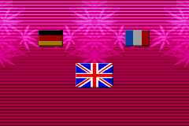

Shaman King - Master of Spirits (Europe) (En,Fr,De)
SRAM 256K Save Format Spec gbakit Built-In 📺 Joybus 🎮 4P Link
Cartridge Identity
- Game Code
BSOP(FamilyBSO)- Header Title
SHAMAN KING- Maker / Revision
A4/ rev0- ROM Size
- 16.0 MiB (16,777,216 B)
- Save Media
SRAM 256K- SHA-256
3a54c26a185ed11324fc29e70a7cc811591cd11d79cf1009f2c6cde8dac7175b- Engine / SDK Group
comm-014(25 families)
Screenshots

Link Cable & Multiplayer Communications
This title contains detected communication capabilities: 📺 Joybus 🎮 4P Link.
Detailed protocol specifications, SIO registers, Joybus commands, and MultiBoot sequences are documented in the Link & Multiplayer Reference.
- Multi-Player SIO (4P)
- 16-bit ring network · SIOCNT (
0x04000128) literals:0x9c8f84· SIODATA32/SIOMULTI0 (0x04000120) literals:0x779160,0x7978d8,0x854d4c - GameCube Joybus
- Register literal
REG_JOYCNT(0x04000140) at offset0x6ceb94 - GameCube Joybus
- Register literal
REG_JOYCNT(0x04000140) at offset0x779170 - GameCube Joybus
- Register literal
REG_JOY_TRANS(0x04000154) at offset0x9c401c
Battery Save Format Specification
Open Full Save Format SpecDownload Sample .sav (32,768 B)Download save-format.json
- Specification Coverage
- 47 mapped fields · 1 verified checksum(s) · Confidence: MEDIUM
- gbakit Built-In Support
- Built-in (BSOP)
gbakit save verify BSOP save.sav
gbakit save decode BSOP save.sav
gbakit save fix BSOP damaged.sav -o repaired.savObserved Battery Save Layout
- Fill Byte & Active Size
0x00fill · 15,856–32,768 / 32,768 B active (entropy 1.11 bits/B)- Active Offset Ranges
0x0–0x7FFF(1 total)- ASCII Magic / Headers
- None detected
- Observed Variable Regions
- 17,256 bytes across 25 spans:
0x0–0x74,0x76–0x58A,0x58C–0x614,0x616–0xB2A,0xB2C–0xBB4,0xBB6–0x10CA,0x10CC–0x1154,0x1156–0x166A, +12 more - Candidate Checksum/Counter Spans
- None
Asset Map (formatkit.asset-map.v1)
Download BSOE-r0-a5b7419577ac8ad3.asset-map.json.gz (214,783 B (209.7 KiB)) Verified PASS · 6.77% coverage
| Metric | Bytes / Value | Entries |
|---|---|---|
| Identified | 380,532 B (371.6 KiB) (2.27%) | 1,747 |
| Mapped | 0 B (0.00%) | 0 |
| Opaque | 755,852 B (738.1 KiB) (4.51%) | 1 |
| Unknown | 15,640,832 B (14.92 MiB) (93.23%) | 1,696 |
| Total ROM Size | 16,777,216 B (16.00 MiB) | 3,444 |
| Coverage % | 6.77% | — |
| Entries w/ Code Refs | 1,970 / 3,444 (57.20%) | — |
Top Identified Formats: gfx.gba-palette (1,741 · 370,112 B (361.4 KiB)) · audio.krawall-sample (5 · 10,228 B (10.0 KiB)) · gba.rom-header (1 · 192 B)
Largest unknown Extents (Headerless / Custom Asset Candidates)
| Offset | Size | Shannon Entropy | Code Refs |
|---|---|---|---|
0x00410420 | 1,592,948 B (1.52 MiB) | 5.785 bits/B | 0 |
0x002AAE84 | 1,463,676 B (1.40 MiB) | 7.074 bits/B | 0 |
0x005A2F2C | 452,828 B (442.2 KiB) | 3.820 bits/B | 0 |
0x00A306FC | 325,892 B (318.3 KiB) | 2.271 bits/B | 0 |
0x002757B8 | 218,796 B (213.7 KiB) | 6.176 bits/B | 0 |
gzip -dk BSOE-r0-a5b7419577ac8ad3.asset-map.json.gz && gbakit map verify rom.gba BSOE-r0-a5b7419577ac8ad3.asset-map.json
gbakit assets export rom.gba --asset-map BSOE-r0-a5b7419577ac8ad3.asset-map.json -o out/Text, Fonts & Scene Data
- Primary Text Encoding
- Plain ASCII (uncompressed) (
1,474ASCII strings ·2Shift-JIS runs) - Font & VWF Indicators
- VWF Width Table 1bpp Font · BIOS SWIs: BitUnPack
0x10:0· LZ770x11/12:0· Huffman0x13:0· RLE0x14/15:0 - Scene & Packaging
134ROM pointer tables (≥32 entries,7≥200) ·67relativeu32TOCs ·459OAM metasprite hits
Hardware MMIO Subsystems
ppu_display0x80009d4,0x8034490save_bus_sram_flash0x80090f0,0x800917c
Regional Variants & Revisions (Family BSO)
- Shaman King - Master of Spirits (USA) (
BSOE, 16 MiB)